Program Beasiswa
Program Beasiswa Siswa Unggul Papua Bidang Vokasi 2020
General Information of The Siswa Unggul Papua Bidang Vokasi Tahun 2020 di SAGU Foundation
Overview
Gambaran Umum Program
Pemerintah Provinsi Papua melalui BPSDM Provinsi Papua menunjuk SAGU Foundation sebagai pelaksana program pembinaan Siswa Unggul Papua Bidang Vokasi (SUP Vokasi) 2020.
Para siswa dalam program ini adalah lulusan SMK dari 5 wilayah adat di Provinsi Papua. Tujuan program adalah mempersiapkan siswa, terutama dalam kemampuan berbahasa Inggris, untuk melanjutkan studi di TAFE Australia. Program dilaksanakan selama 9 bulan, mulai bulan November 2020 hingga Juli 2021.
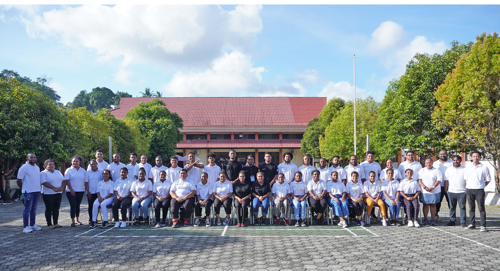
Video Program
Dokumentasi SUP Vokasi 2020
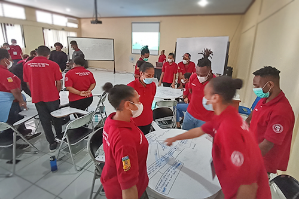
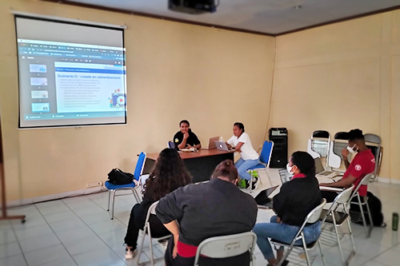
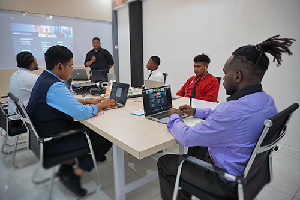
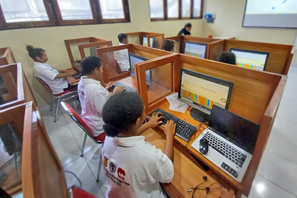
Academic & Personal
Pengembangan Akademik & Individu
Secara umum, program ini memiliki dua tujuan utama, yaitu pada Academic Development dan Personal Development. Pada fokus Academic Development, siswa akan dibimbing untuk meningkatkan skill berbahasa Inggris yaitu listening, reading, writing dan speaking, dalam rangka persiapan menghadapi tes IELTS.
Peserta akan diperkenalkan pada sistem belajar di Australia, juga sistem belajar online. Pada fokus Personal Development, peserta akan dibekali skills yang akan menunjang academic survival selama menempuh perkuliahan di universitas tujuan di Australia.
Skills tersebut adalah Personal Management meliputi Personal Budgeting Management, Time Management, Learning Strategies and Study Skills, Information Literacy and Skills Training, Computer Skills Training, dan Cross Cultural Studies.
Video Kegiatan
Kegiatan Pembinaan SUP Vokasi 2020
Kegiatan Pendukung
Ekstrakurikuler
Kegiatan ekstrakurikuler dilakukan dengan tujuan menambah skill / kemampuan penunjang serta mempersiapkan siswa ketika berada di kampus tujuan.
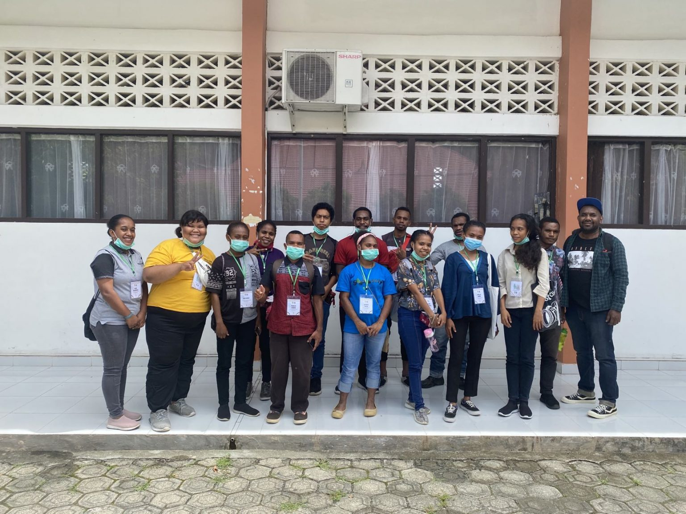
Public Speaking
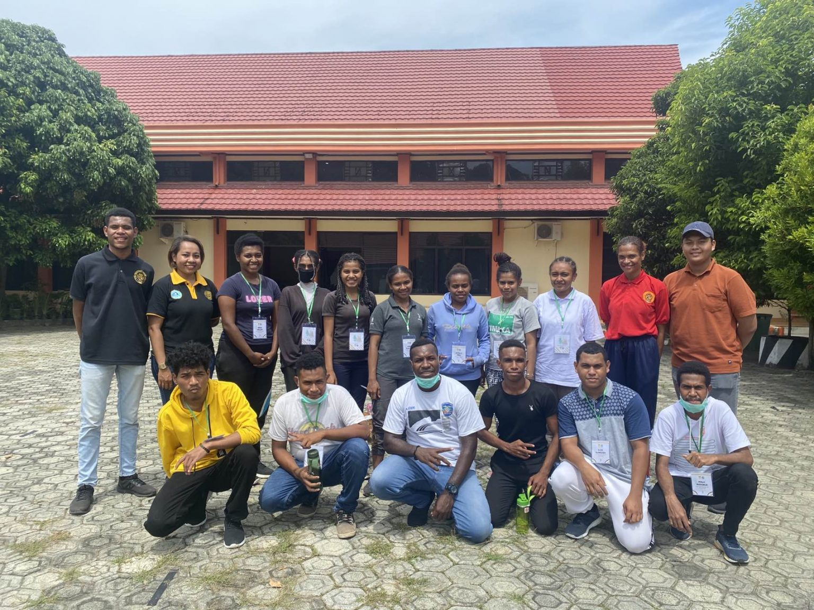
Paskibra
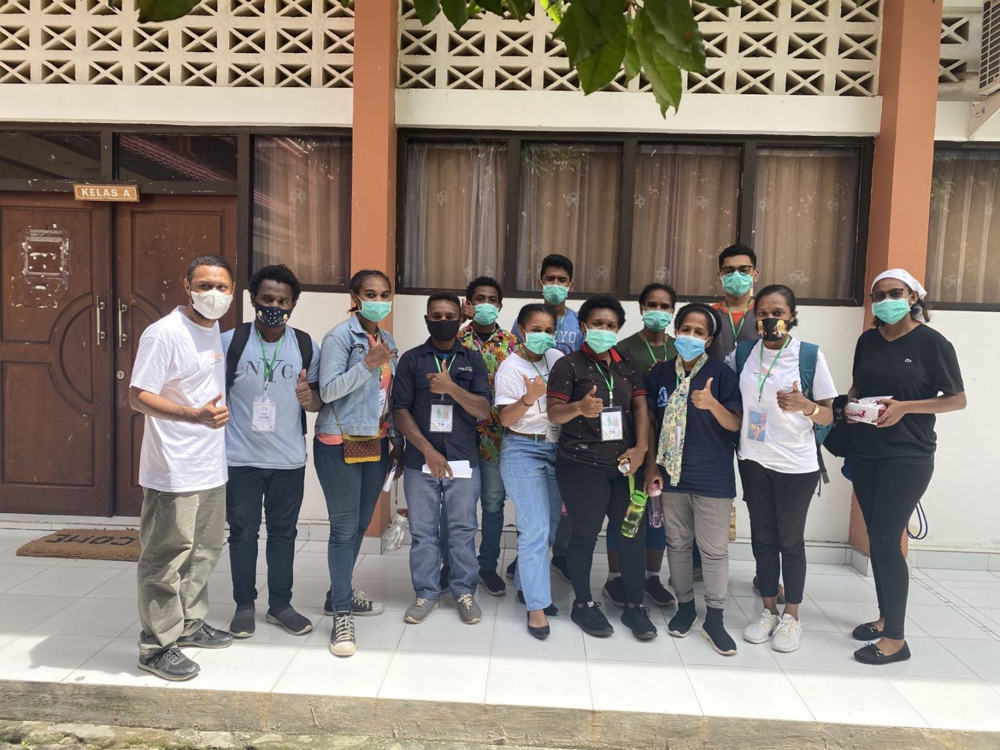
Barista – Cafe Bersama Highland Roastery
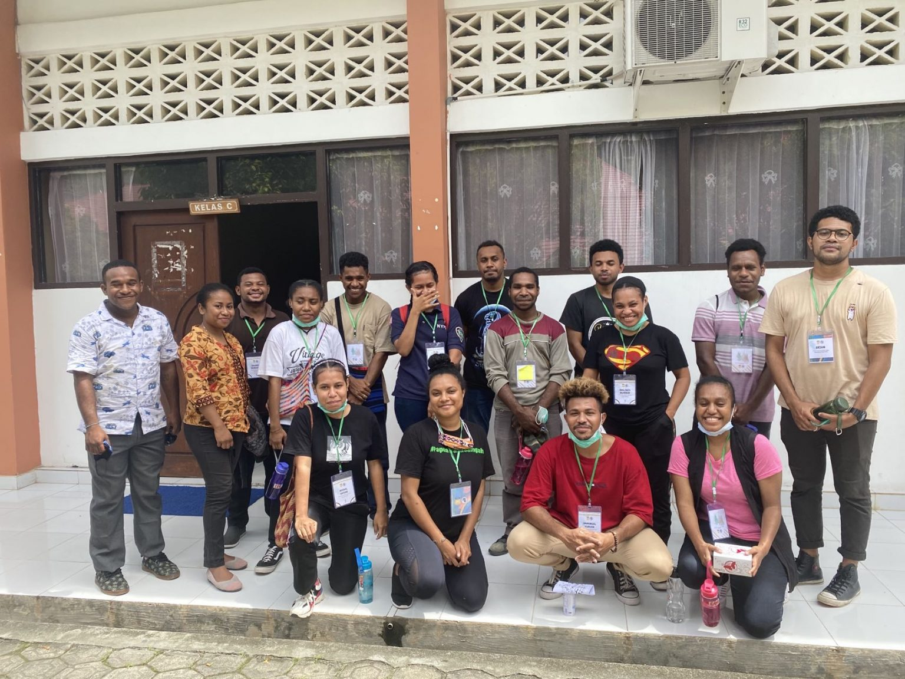
Papua Trada Sampah
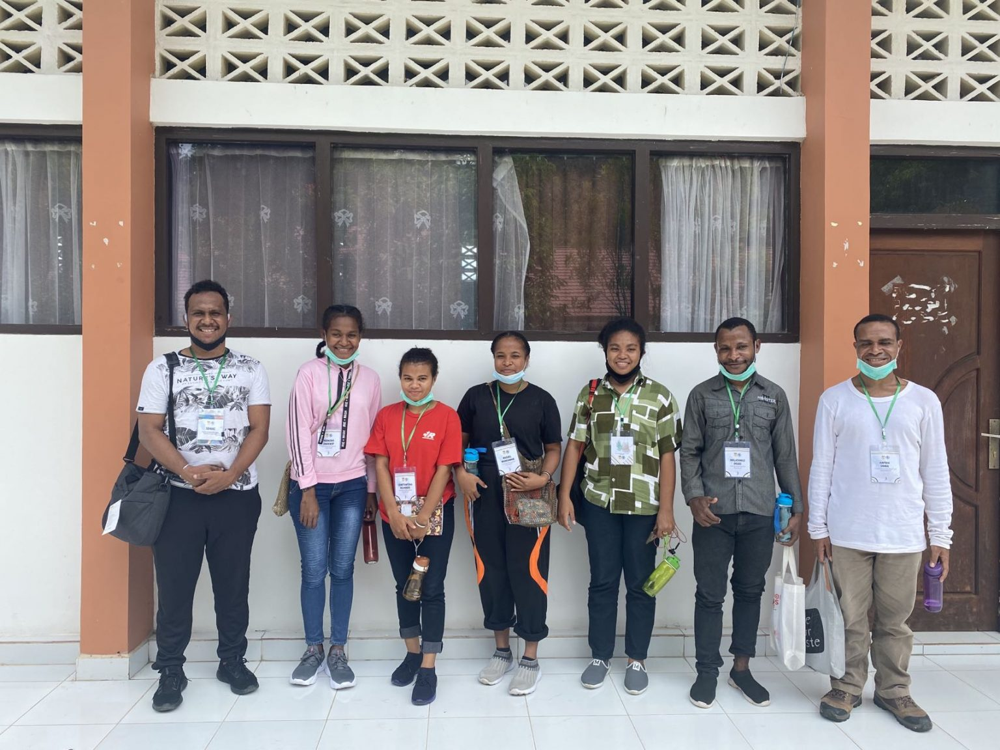
English Debate Class
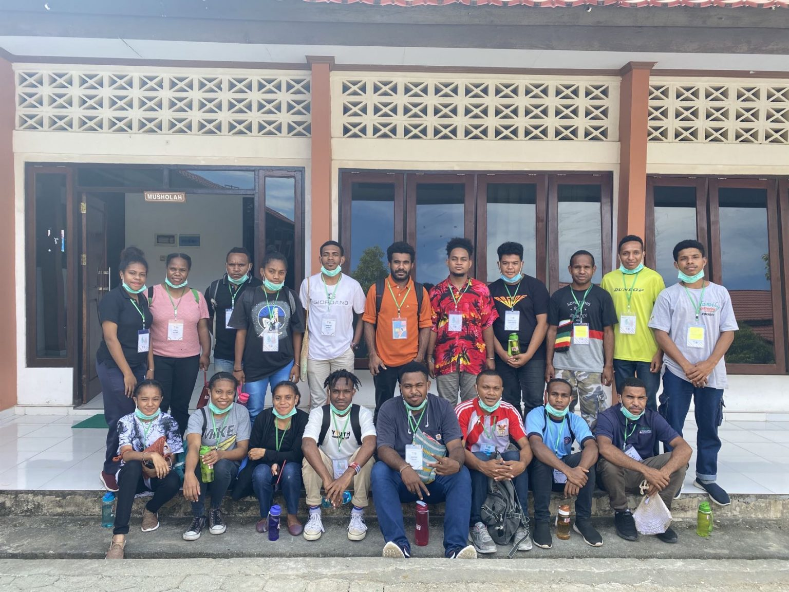
Coding
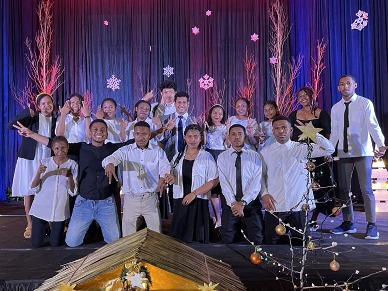
Paduan Suara
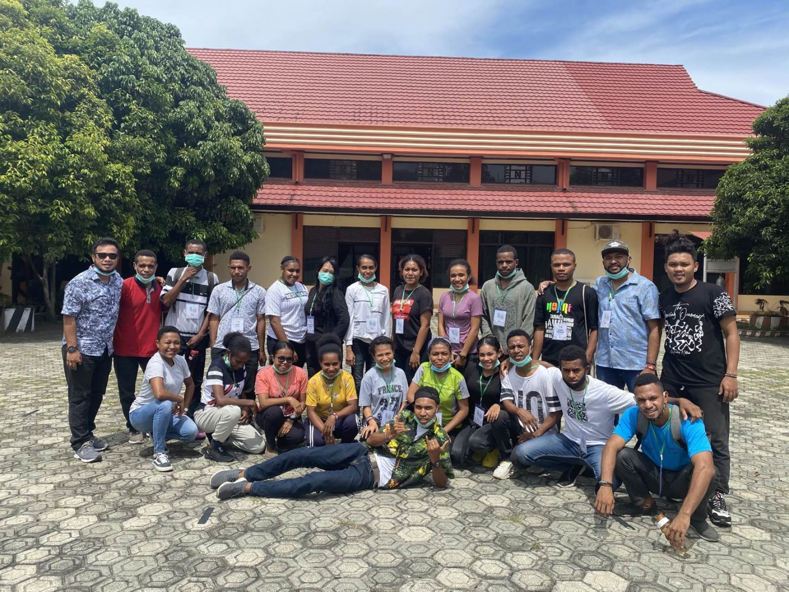